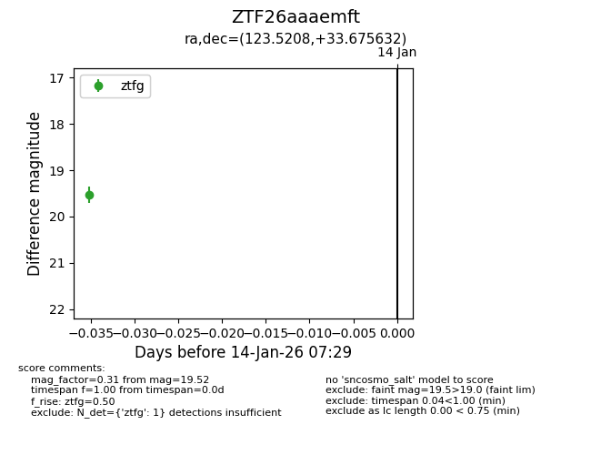
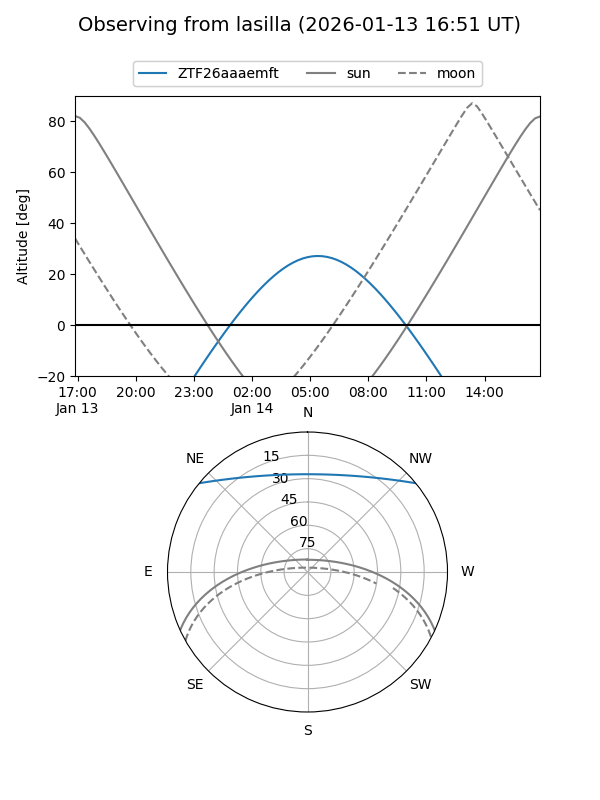
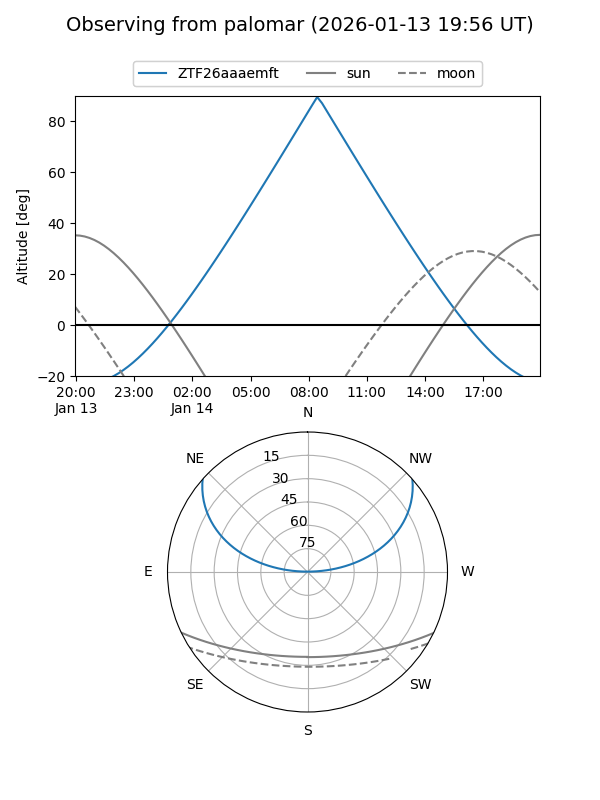

ZTF26aaaemft
Target ZTF26aaaemft at 2026-01-16 07:37
Aliases and brokers:
FINK: link
Lasair: link
ALeRCE: link
alt names
ZTF26aaaemft (ztf,fink_ztf)
Coordinates:
equatorial (ra, dec) = 123.5208,+33.67563
equatorial (HMS+DMS) = 08:14:05.00,+33:40:32.27
galactic (l, b) = (188.1438,+30.94190)
Flags:
Photometry:
last ztfg=19.52
1 ztfg detections
Lightcurve

Visibility


Additional plots